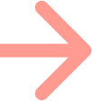
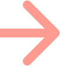

I lead this project in SB Creative Labs' Project Teams program in spring 2024, as a first-time project manager. In 8 weeks, my team of 4 conducted research, designed, and presented a case study for a mobile app that curates newsletters for different interests — any interests generic or niche — to help users explore their hobbies.
Features include:

We researched relevant websites — such as Pinterest, Apple News, Print Magazine, Nightingale, Spotify, Facebook, and Instagram — and consolidated features we loved, disliked, and could improve on for our app.
Our method was to conduct both surveys and interviews. We sought specific quantitative data through the survey — for example: how often users read articles, or what apps and devices they use. Interviews focused on personal feedback, asking questions like how users stay updated on current news, or are there any specific issues users run into when accessing articles online. We found that people valued user-friendly accessibility and interface, privacy and allowing users to choose what they share to friends, and having a wide variety of content with well-organized navigation for easy access to different articles.

Brainstorming and finalizing questions for UX research.


User personas were made to help understand the different possible profiles and user-styles that might use our app.
Based on the research results, we came up with features we want to implement or improve upon in our app. The biggest pain points we found were privacy concerns in regards to what users were reading, biased news articles, running into paywalls, and accessibility and interface navigation in existing apps.


We made a flowchart to help us understand interactions between pages — this helped us design the initial sketches and lofi iterations of each page.

Example: We wanted to make a connections page to add friends, where people could see peer's reading activity, since there was a lot of interest in this feature from the UX research. We combined aspects of social media with the newsletter app to accommodate.
 



Example hifi revision: For this page, we added usernames and the reading history, and allowed activity privacy and customization options in the settings!

As a first time project manager for a design project, I learned to balance task delegation and leading by example. To overcome my perfectionist tendencies of handling all the work myself, I learned to trust my teammates by delegating important tasks. As a result, allowing the team to claim more ownership made them more dedicated — constantly staying long after meetings to ensure we deliver a quality project. In addition, I also lead by example by enthusiastically taking up grunt work and unclaimed tasks, so that the team stays motivated and involved without being overwhelmed. I emerged from this experience a more open-minded leader and dependable team player.
Hit me up!